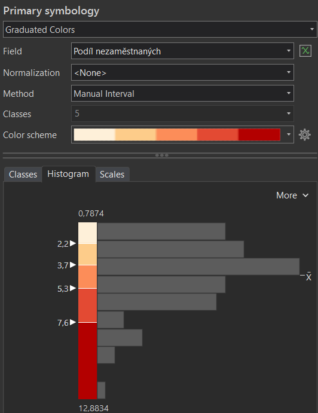
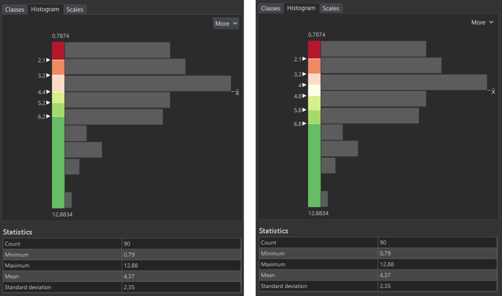
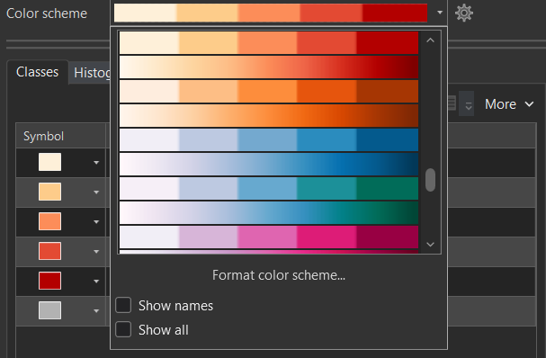
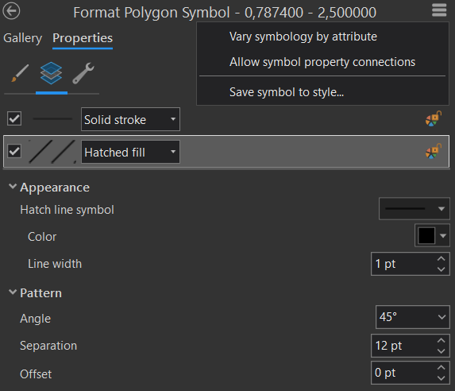
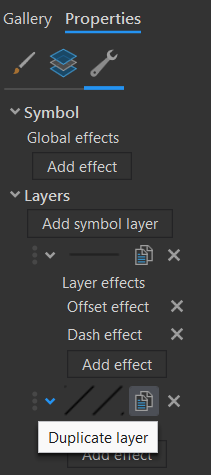

Kartogram
Podstatou kartogramu (choropleth map) je znázornění jevu vyjádřeného relativními hodnotami, zachyceného za dílčí územní celky. Pro správné srovnání je klíčové, aby data byla relativní, tj. v ideálním případě přepočtená na plochu územní jednotky (tzv. pravý kartogram), akceptovatelné je i přepočítání s využitím jiné charakteristiky územní jednotky, např. na počet obyvatel (tzv. nepravý kartogram). Častou a zásadní chybou je použití této kartografické vyjadřovací metody na absolutní data. (Lysák, 2014)
Základní dělení kartogramů
- Jednoduchý kartogram
- Homogenní kartogram zobrazuje pouze jeden relativní jev, a to změnou barvy nebo rastru
- Kvalifikační kartogram znázorňuje rozdíl jevu od zvolené střední hodnoty S (např. průměr, medián, směrodatná odchylka, nula/, nulová změna, ...). Pro oblasti s hodnotou jevu větší než S se volí odstíny barvy opačného charakteru než pro jevy s hodnotu menší než S.
- Složený kartogram zobrazuje hodnoty dvou nebo více jevů, umožňuje jejich vzájemné srovnání, typicky je jeden jev vyjádřen barvou, druhý rastrem
Tvorba kartogramu zahrnuje tři hlavní úkoly:
- Tvorba intervalové stupnice, resp. klasifikace vstupních dat do intervalů.
- Grafické řešení jejich znázornění v mapě (obvykle pomocí barevné stupnice či rastru).
- Návrh správné legendy.
Grafický návrh znázornění intervalů v mapě
Barevné stupnice
Při výběru nebo tvorbě barevných stupnic pro tematické mapy jsou klíčová data, která mapa zobrazuje: barevné schéma by mělo odpovídat povaze dat. Barevná schémata v kartografii v základu rozdělujeme na binární, kvalitativní, sekvenční (unipolární) a divergentní (bipolární) viz schéma níže. Pro složitější data (s kombinací více proměnných) vytváříme složitější kombinovaná barevná schémata. (Miklín, 2017)
{kind=link}
Rastrové stupnice
Nejběžnějším způsobem vyjádřením kvantity rastrem je šrafování, příp. tečkování. Intenzita se znázorňuje dvěma způsoby:
- zvyšováním hustoty čar (teček), přičemž tloušťka čar (velikost teček) zůstává stejná
- zvětšováním tloušťky čar (velikosti teček), přičemž hustota čar (teček) zůstává stejná
Nejřidší šrafování odopvídá nejnižší intenzitě jevu, nejhustší pak nejvyšší.
{kind=link}
Jednoduchý kartogram v ArcGIS Pro
Rozdělení dat do intervalů
- zvolíme vhodnou metodu vizualizace pro kvantitativní data odpovídající definici kartogramu --> Primary symbology-Graduated Colors
- zvolíme data, která chceme vizualizovat (Field)
- prozkoumáme statistické rozdělení dat prostřednictvím histogramu (Symbology-Histogram)
- zvolíme vhodný klasifikační algoritmus (Method) a počet intervalů (Classes)
- v případě potřeby výslednou klasifikaci dodatečně manuálně upravíme (např. zaokrouhlení hraničních hodnot)

{kind=link}
Klasifikační kartogram
- zjistíme střední hodnotu zobrazovaného jevu (More-Show statistics), kterou můžeme zahrnout do samostatného intervalu (lichý počet intervalů) nebo ji využít jako mezní hodnotu oddělující intervaly nad/pod zvolenou hodnotou (sudý počet intervalů)

Kvalifikační kartogram - klasifikace dat v ArcGIS Pro
{kind=link}
Vizualizace dat
- barevná stupnice:
- barvu můžeme postupně definovat pro jednotlivé intervaly (Classes-Symbol) či si zvolit jednu z předdefinovaných barevných stupnic (Color scheme), které je možné dodatečně formátovat (Format color scheme), což se hodí například pro tvorbu divergentní barevné stupnice, která není v nabídce barevných stupnic defaultně dostupná

{kind=link}
- rastrová stupnice:
- rastr musíme definovat manuálně pro jednotlivé intervaly (Classes-Symbol) (sw neumí automaticky generovat rastrové stupnice)
- ve vlastnostech symbolu (Properties-Layers) je nutné změnit typ výplně na Hatched fill a vhodně nastavit vybrané parametry rastru, jako např. barvu linie (Color), tloušťku linie (Line width), sklon (Angle), rozestup (Separation)

{kind=link}
Uložení vlastního symbolu
- pro usnadnění práce je vhodné symbol se základním nastavením uložit do stylu (horní menu-Save symbol to style) a následně jej aplikovat pro všechny ostatní intervaly (v Symbology-Classes zvolte More-Format all symbols, poté příslušný symbol vyberte z galerie symbolů (Gallery))
- u dalších interval již postačí nastavit jen vhodnou hodnotu tloušťku linii (Line width) či jejich rozestupu (Separation) tak, aby s narůstající intenzitou jevu narůstala hustota rastru (v závislosti na zvoleném způsobu vykreslení rastru)
Vícesměrný rastr
- narůstající hustotu můžeme vyjádřit i s využitím vícesměrného rastru (dva na sebe kolmé jednosměrné rastry)
- ve vlastnostech symbolu (Properties-Structure) duplikujeme vrstvu výplně symbolu, pro kterou v části (Properties-Layers) nastavíme hodnotu rozestupu (Separation) tak, aby na sebe oba jednosměrně rastry byly kolmé (nejčastěji volíme sklonitost 45° a 135°)

Přidání vrstvy symbolu
{kind=link}